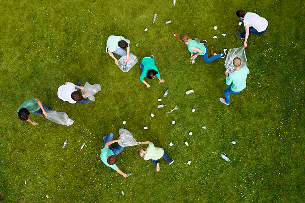

Help Preserve our Planet for Future Generations
We're grateful for your willingness to support our cause. To proceed with the donation, please click on the button below.
Help Preserve our Planet for Future Generations
We're grateful for your willingness to support our cause. To proceed with the donation, please click on the button below.
For the Environment

Conservation of Biodiversity
We work directly to preserve forests, wetlands and other ecosystems
Pollution Reduction
We focus on reducing pollution in the air, water and soil
Climate Change Mitigation
We support initiatives such as reforestation, renewable energy and community-based adaption measures
Sustainable Agriculture
We promote farming methods that are environmentally friendly and sustainable
For the Community
Job Creation
Local communities can benefit from employment opportunities in conservation projects
Ecosystem Services
Healthy ecosystem provide services like clean water, pollination and flood control that benefit local communities
Community Empowerment
We support community-based conservation initiatives that empowers locals to manage their resource
Educational Outreach
Local communities gain knowledge about sustainable practices and the importance of their environment
Our Non-profit Organization conducts all fundraising and advancement activities in accordance with the Association of Fundraising Professional (AFP) Code of Ethical Principles and Standards. All interactions with donors and/or prospective donors are managed with strict adherence to the principles expressed in the AFP Donor Bill of Rights.
At the heart of our mission lies the genuine belief in the transformative power of voluntary goodwill for societal progress. The act of giving, rooted deeply in our ethos, has always been central to enriching the fabric of our communities. To ensure that our philanthropic endeavors consistently garner the trust and esteem of the public, and to provide donors and potential supporters unwavering confidence in our cause and operations, we firmly uphold the following donor rights: